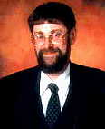
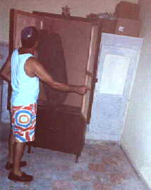

"You’re going to where?"
 That
was the usual reaction to our announcement that Michelle and
I were going to Cuba.
It hadn’t always been the plan. When
we realised that Mike and Linda Necus would be celebrating their
silver wedding anniversary exactly a week after us, the four of
us had thought about throwing a big joint simcha but, after a
meal together to discuss plans, we came up with a much better
idea- a joint holiday.
Why Cuba? Well, because it was
a special occasion we wanted somewhere exciting, preferably
hot any sunny which wasn’t too expensive. Cuba fitted the bill
exactly. The company called the trip "The Cuba Experience,"
which it certainly was. We soon got used to the inevitable cracks
about hi-jacking and beards and began to find out what we could
about Cuba.
We hadn’t realised that there
were any Jews on the island but researches on the Internet led
me to a couple of sites including one The
Jews of Cuba. This is an American site which contains a
considerable amount of information. It is run by Richard Smith
of Richmond, Virginia, and Jorge Rivero Behar, of Santiago de
Cuba.
Although organised religion was
largely outlawed following the 1959 revolution, the government’s
stance began to relax during the late 1980’s until in 1992 organised
religion was once again permitted.
Although most of Cuba’s Jews left
the island for the United States there are still about 2,000
Jews on the island. Most of these, about 1400, live in Havana,
where there are three Shuls, but we were particularly interested
in the community of Camaguey, which is in the centre of the
country and is Cuba’s third largest city, as for most of our
trip we would be in Playa St. Lucia which is about 70 miles,
or one and a half hours’ drive from Camaguey.
The Jews of Camaguey are in the
process of building a new Shul, the first to be built in Cuba
since the revolution. It has a Jewish population of about 140,
which makes it about the same size as Northampton. After finding
an article on the Internet about the community by David Abel
we decided to try to contact the community.
This was easier said than done.
After contacting Richard Smith by e-mail, he put me in touch
with Mindy-Sue Shapiro who has been to Camaguey and has met
some members of the community. She gave us the address and telephone
number of Alberto and Miriam Roffe, who are the leaders of the
community.
Our holiday comprised two nights
in Havana, 10 nights in Playa St. Lucia and the last night in
Havana before flying home overnight. It isn’t generally known
but Cuba is a very big country. It’s over 800 miles long and
our transfer from Havana to Playa St. Lucia would be by internal
flight.
What we hadn’t bargained for was,
first, the amount of time you waste in transfers on a two centre
(or in our case a three centre) holiday and second, Hurricane
Mitch. After a full day in Havana we set off for the airport
the following afternoon for what was supposed to be a short
(1½ hour) flight to Camaguey, arriving at the airport two hours
before the flight was due to leave. We arrived during what we
thought was a short-term tropical rainstorm but was actually,
unknown to us, the start of Hurricane Mitch. Our flight was
in an old but reliable Russian Antonov propeller engined plane.
Because the plane only flies at about 10,000 feet it isn’t pressurised.
The cooling system involves opening vents allowing cool air
into the cabin or, when you’re flying through cloud, steam.
This looks frighteningly like smoke!
About 10 minutes before we were
due to land we learnt that owing to adverse weather conditions
(i.e. another tropical storm) at Camaguey, we were to be diverted
to Holguin which is half an hour further on. After an hour in
a transit lounge at Holguin we flew back to Camaguey. We arrived
at about 7.30 and after a seemingly endless coach trip through
the rain we arrived at St. Lucia at about 9.00 in the evening.
For the next two days we had intermittent rain and strong winds.
We were actually very lucky because we were only on the fringe
of the area affected by Mitch.
I telephoned Alberto Roffe in
Camaguey and arranged to go to his house a couple of days later.
This was quite a phone call considering that I don’t speak any
Spanish and he has virtually no English! Our tour representative,
Ariel, comes from Camaguey and kindly marked the street on our
map for us. We hired a car and drove to Camaguey. Driving in
Cuba is a dream during the day- there’s virtually no traffic
outside the cities. At night it’s a different story with dozens
of cycles being ridden along unlit streets without lights, not
to mention horses and carts!
After looking around Camaguey
for the morning aided by a charming boy of about 14 who attached
himself to us as an unofficial guide, we set off to find Alberto’s
house using our rep’s instructions. We ended up quite lost but
a kindly museum curator led us on his bike all the across to
the other side of the city where the address really was. Thanks,
Ariel!
We eventually arrived at the house
in the late afternoon and were made very welcome by Miriam who
speaks very little English. We were soon joined by Alberto and
another member of the community and also by a lady who’s an
English teacher. With her help, we had a very interesting conversation.
We also met Miriam’s mother who lives next door. Unfortunately
there was then a power cut. This happens virtually every day
in much of Cuba. Miriam showed us some photographs including
a recent one of her and Alberto under a chupa during a ceremony
when she converted to Judaism.
While we were at the house, someone
brought in what looked like half a loaf of French bread. This,
she told us, is a day’s bread ration for two people. When we
thought of the mountains of food we’d eaten in the hotel and
of the amount that’s thrown away, we felt very guilty.

Alberto then took us to see the
new Shul which is about 10 minutes’ walk away. It’s a very small
building which seems to be two houses knocked into one. The
structure is sound but there’s a great deal to do inside. Alberto
told me that they had hoped to open the Shul in time for Rosh
Hashanah but that they had run out of money and had to stop.
The Shul has one Sefer Torah and a small Ark. They hope to open
it for prayer some time next year but this depends on donations.
When you consider that a doctor in Cuba earns about 20 dollars
a month (no it’s not a misprint) they need all the help they
can get.
Alberto is very proud of what
they have achieved. The community is growing. they have 27 children
so far. The community is dependant on help both from inside
Cuba and from outside. They receive supplies from America and
help from a Rabbi from Havana. They are starting to learn Hebrew.
After all they have 40 years to catch up.
by
John Josephs